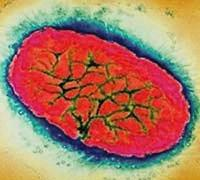

Pertussis
Pertussis, also known as whooping cough, is caused by Bordetella pertussis, a bacteria. Pertussis is caused by toxins produced by B. pertussis. The toxins paralyze the cilia in your respiratory tract. The lifetime of the illness is spread into three stages: catarrhal, paroxysmal, and convalescence. In the catarrhal stage, which lasts about 1-2 weeks, patients often experience a runny nose, fever, and a cough, which becomes more severe with time. In the paroxysmal stage, which can last up to 6 weeks, the patient experiences bursts of rapid coughs that can lead to fatigue and vomiting. In the convalescence stage the coughs gradually get better. It is also very common to contract pneumonia when infected with pertussis. Pertussis is transmitted through the air and is very contagious. In the US, pertussis has been increasing since the 1980s; there were 27,000 cases in the US in 2010.

There are two types of pertussis vaccines: whole cell and subunit vaccines.The whole cell pertussis vaccine (DTP) was designed in the 1940s.
Although efficacious it does not provide protection past a decade after vaccination. It is no longer in use in the US. The subunit vaccine (part of DTaP and Tdap) is made up of purified and inactivated parts of the B. pertussis bacteria. DTaP is approved for children and has an efficacy of 80-85%. Four doses of DTaP are given at around 2, 4, 6, and 15 months. A 5th dose of DTaP should be received before starting school (between ages 4 and 6). One should stick to the same brand of DTaP when possible, although there are no reported adverse effects. When the child is 11-12 years old they should receive a Tdap vaccine. Like any medical intervention these vaccines have some adverse effects, but the benefits outweigh the negative consequences.
When you use the herd immunity calculator you will notice that herd immunity cannot be achieved against pertussis. This is due to two major factors: high reproductive rates and inherent flaws in the vaccine. Reproductive rates and vaccine effectiveness are key determinants in the herd immunity threshold (see the formula on the herd immunity calculator page). Although the reproductive rate for pertussis is not overwhelmingly high, the poor effectiveness of the vaccine prevents herd immunity from being granted. Moreover, the subunit vaccine confers protection but the protection inherently diminishes over time, requiring future shots to ensure that the individual is still immune to pertussis. The lack of lifelong immunity decreases the likelihood of achieving herd immunity. In addition, it is likely that the vaccine prevents the symptoms of the disease, but not the spread of disease, decreasing the likelihood for herd immunity. This makes it even more important to vaccinate against pertussis.
Adapted From:
1. Centers for Disease Control and Prevention. (2015). Pertussis. In Hamborsky J., Kroger A., Wolfe S., (Eds.), Epidemiology and Prevention of Vaccine-Preventable Diseases (13th ed., 261-77). Washington D.C. Public Health Foundation.
Image from: http://www.tabletsmanual.com/wiki/read/pertussis